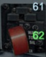

YF-23

61 wskaźniki wysuniętego podwozia
lampka na górze informuje o przednim podwoziu, natomiast dwie dolne o podwoziu tylnym/głównym.
Jeśli lampki świecą się na zielono to oznacza, że podwozie jest wypuszczone prawidłowo oraz jest
gotowe do lądowania, kołowania. Czerwony kolor wskazuje, że podwozie jest schowane. Taka konfiguracja samolotu występuje podczas lotu.
62. gałka do wysuwania podwozia
Jeśli gałka jest umieszczona w górze, to podwozie jest schowane,
Jeśli gałka jest umieszczona na dole, to podwozie jest opuszczone.